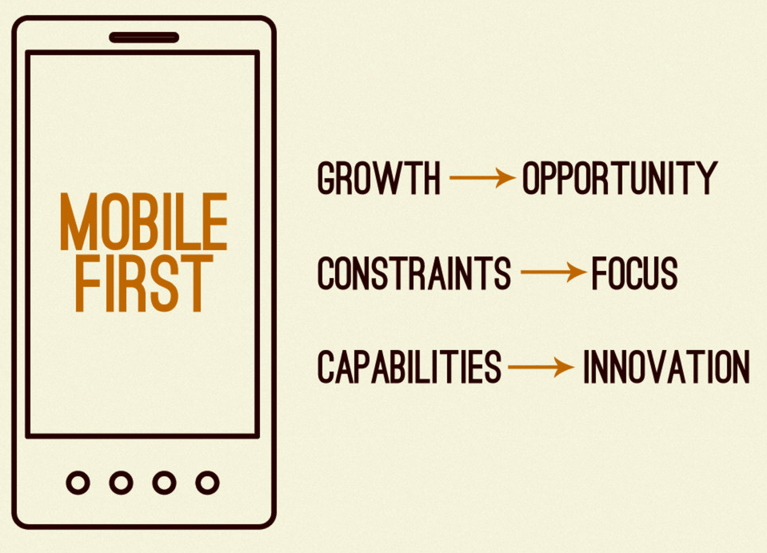

You, Me, and RWD
...a match made in harmony.
An exploration of Responsive Web Design.
2015
Mobile web usage will
surpass desktop usage
Psst... that's next year...
This is not the Web

Neither are these
This is the Web
This will be the Web
Let's Pretend it's Your Birthday...
HAPPY BIRTHDAY!
You know what device you'll be unwrapping tomorrow.
...but what about two birthdays from now?
10 Birthdays From Now...

What Can We Do?
We can start by utilizing Responsive Web Design
What is RWD?
Fluid layouts, flexible images, and media queries.
- Ethan Marcotte
Sure, but it's evolved to mean even more
- Conditionally load scripts
- Progressively enhanced based on device capability
- Optimize Performance
- "Content First"
- Information Architecture
- Different sized images for different devices
- Mobile specific features (location, touch etc)
- ...and a smorgasbord of "Responsive" X's
Accomodate for Meat Sticks
aka "touch"
RWD is best "Mobile First"
Mobile First Benefits

RWD Examples
Navigation

Responsive Grid

Responsive Tables

RWD Strategies
Responsive Retrofitting
aka Responsive Last
aka degraded, shoe-horned, short-sighted, crappy
Responsive Retrofitting
Pros
- Relatively quick
- Familiar
- Organizationally quicker
Responsive Retrofitting
Cons
- Only scratches the surface
- 10 gallons of water in a 3 gallon bucket
- Performance
- Band-Aid fix
Responsive Mobile Sites
Responsive Mobile Sites
Responsive Mobile Sites
Pros
- Lower risk (trial)
- Learning to be flexible
- Infrastructure
- Trim the fat
- A mobile-first future
Responsive Mobile Sites
Cons
- It’s still an m-dot site
- Band-Aid fix
- May die on the vine
Mobile First
aka Progressively Enhanced, Future-friendly, awesome
Mobile First
Pros
- A fresh start
- Better support
- Performance
- Concurrent Consideration
- Future friendly
Mobile First
Cons
- Time consuming
- A mental shift
- Organizationally difficult
- Unfamiliar
Piecemeal
Page by Page
Component by Component
In mid 2011
I looked at our analytics and saw something frightening...
2,000,000
* 0.10
200,000
Pageviews
It looked like this.
Which Option are We Utilizing?
I used the "Responsive Retrofitting" approach to make the DCJS website mobile friendly.
DCJS Website (Large)
DCJS Website (Medium)
DCJS Website (Small)
DCJS Website (Menu)
...But that was so 2000-late
Now, we're building all of our new apps and sites using a "Mobile First" "Responsive Web Design" approach.
Missing Persons Tip App
Wait!
Those look similar!
Did you develop a custom framework for those?
Typical Development Process
Typical Development Process
Responsive Design Can Be Hard
It takes a lot of time
It's a moving target
It's fundamentally different
What's the Alternative?
What makes the web great?
Isn't the web just a series of components?
Frameworks Make RWD Easy
All you need to know is HTML & CSS
Fully documented components
In-depth wikis
Foundation
http://foundation.zurb.comBootstrap
B
Frameworks
Mobile First
Semantic Markup
Library of JavaScript Plugins
They are Open-Source
Licensed without limitations, use, copy, modify, etc
Bug reporting
All code needs testing
If you find a bug:
You can easily report it using GitHub Issues
So which one do I use?
..it depends.
Does Bootstrap meet your needs? Use it.
Does Foundation meet your needs? Use it.
What About Browser Support?
Fully functional in all major browsers
Chrome, Firefox, Opera, Safari
iPhone, Android, and Windows Phones
What about IE?
Bootstrap 3: Officially IE 8+
Foundation 5: Officially IE 9+
Foundation 4: Officially IE 8+
Non-major browsers will still "work"
You still serve them the same content.
IE6 & IE7 see your mobile-first styles
Please consider dropping support for IE6 now.
Some People Might be Thinking...

"My sites MUST look identical across all browsers and fully support IE6 AND IE7!"
I've got two things to say about that:
1. Do you REALLY?

IE 6 is Dead
IE 6 = 0.15%
Source: StatCounterIE 7 is Too.
IE 7 = 0.28%
Source: StatCounter2. Don't Shun the Future for the past
“Never put off tomorrow- Thomas Jefferson
what you can do today”
Look Close, You'll See Something
Browser Usage 2009-2014
Source: StatCounterFocus on mobile

Mobile Usage 2009-2013
Source: StatCounter“Eric,
Shut Up.”
RWD Doesn't Have to be Hard
Frameworks aim to help you start out on the right path
Don't reinvent the wheel again
How Do I get Started?
Responsive Web Design Resources
Responsive Web Design (Article that started it all)
Beginners Guide to Responsive Web Design
Responsive Web Design Techniques, Tools and Design Strategies
Community
Thanks
Eric Steinborn ITS Public Safety Cluster
View this presentation online @
bit.ly/excelsiorp